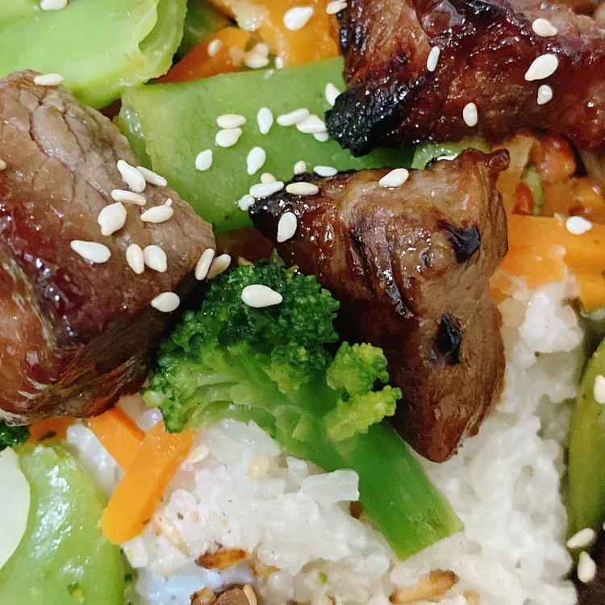

Leo's Sneaky Steak Bites

Description
These steak bites are full of Asian-inspired flavors and are fabulous when paired with coconut jasmine rice or will elevate any stir-fried vegetable dish!
Ingredients
- 1 pound beef rib-eye steaks
- 1/4 cup oyster sauce
- 2 tablespoons reduced-sodium soy sauce
- 2 tablespoons sweet soy sauce
- 1 tablespoon sesame oil
- 1 tablespoon brown sugar
- 1/2 teaspoon toasted sesame seeds
Steps
- Cut steak into bite-size pieces. Place steak bites into a resealable plastic bag.
- Mix together oyster sauce, soy sauce, sweet soy sauce, sesame oil, and brown sugar in a bowl. Pour mixture over the steak pieces and mix to coat with marinade. Marinate for 30 minutes.
- Preheat an air fryer to 400 degrees F (200 degrees C).
- Line the air fryer basket with a perforated parchment round. Drain marinade from steak and set steak pieces onto the parchment.
- Air-fry until steak bites are cooked to your desired doneness, about 6 minutes, shaking the basket at the 3-minute mark.
- Remove steak bites from the air fryer and sprinkle with toasted sesame seeds before serving.